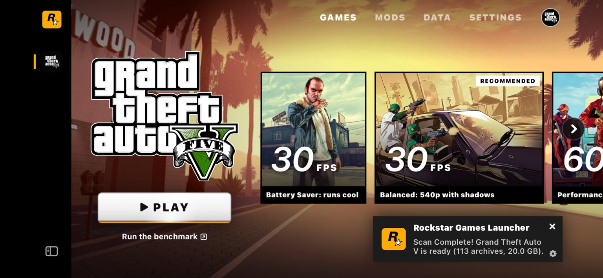

Game settings
Adjust display, graphics, controls, and audio settings to suit your device.
An independent guide to GTA V Port for iOS, with launcher screenshots, installation steps, and links to project resources.

The launcher brings together game settings, files, saves, and mod options.
Adjust display, graphics, controls, and audio settings to suit your device.
Review game files, available storage, device information, and save slots on the Data page.
Browse mod categories for vehicles, weapons, visuals, and gameplay. Compatibility varies by mod and port version.
Browse the launcher screens below.
Select a tab to view its settings and features.
Select a graphics preset and launch the game. FPS labels indicate preset targets; actual performance varies by device and settings.
Follow the steps below to prepare for installation. Five Star Port provides the app, current requirements, and detailed setup instructions.
App and setup guide ↗Opens Five Star Port. This website does not host app or game files.Check the required iOS version, memory, free storage, and game file version in the project guide. Requirements may change between releases.
Use files from a copy of the game you own. Check that the file version and folder structure match the installation guide.
Download the app from the release channel linked by the project, then follow its signing and installation instructions.
Select your game folder as described in the guide. Start with lower graphics settings and check performance and device temperature before adjusting them.
Answers about installation, compatibility, and performance.
No. This is an independent community guide, with no affiliation to Rockstar Games or Take-Two Interactive.
No. The game runs in a separate app. This website provides installation information, screenshots, and links to project resources.
Five Star Port links to the app release channel and setup instructions. You will need game files from a copy you own; they are not provided here.
Support depends on the device, available memory, iOS version, and port release. Check the current project requirements before installing. Screenshots may show a different release.
No. FPS labels in the screenshots are preset targets, not verified benchmarks. Performance varies with hardware, graphics settings, temperature, and app version.